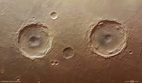

4.-Los planetas.
Introducción:
Investigación
2.-Recuerda la teoría de los planetesimales sobre el origen del Sistema Solar. ¿Cuál pudo ser la causa de que los planetas se ordenen en dos grupos con diferentes características?
Explicación
Esta animación amplía la información sobre los planetas y si activas la vista de planta podrás ver las diferentes velocidades de traslación alrededor del Sol que determina las enormes diferencias en la duración del año de cada planeta. Pincha en la imagen para acceder.
Investigación 2
¿Qué nos dicen los cráteres?
La superficie de Mercurio está plagada de cráteres, igual ocurre con la de la Luna y con la de muchos asteroides. Cualquier cuerpo de nuestro sistema solar que puede tener cráteres los tiene.
Estos cráteres no son de origen volcánico sino que se han formado como consecuencia del impacto de asteroides u otros cuerpos celestes.

a) ¿Habrá cráteres de impacto en Júpiter? ¿Y en el Sol? Justifica la respuesta.
¿Qué papel han podido desempeñar los impactos de asteroides en la evolución del sistema solar?
c)¿La teoría planetesimal explica por qué giran todos los planetas en el mismo sentido que lo hace el Sol?
d)¿Cómo justifica la teoría planetesimal que las órbitas de todos los planetas se sitúen en el mismo plano?
Curiosidad
El caso de Plutón y otros planetas enanos
Hasta agosto de 2006, Plutón había sido considerado como el planeta más externo y pequeño (2 300 km de diámetro) de nuestro Sistema Solar. Ese año la Unión Astronómica Internacional, UAI, estableció que un planeta debe cumplir las dos condiciones siguientes:
- Su forma debe ser prácticamente esférica.
- Debe haber barrido su órbita; es decir, tiene que haber atraído hacia sí los cuerpos de menor masa que ha encontrado en su movimiento, de manera que estos hayan pasado a formar parte de la masa del planeta.
Los planetas enanos son los cuerpos celestes que cumplen la primera condición de planeta, pero no la segunda. Es el caso de Ceres, situado en el cinturón de asteroides, Plutón, Eris, Makemake y Haumea.
Si pinchas en la imagen anterior puedes ver un breve video de cómo fue el proceso de la toma de decisión sobre Plutón y cómo los científicos se ponen de acuerdo.